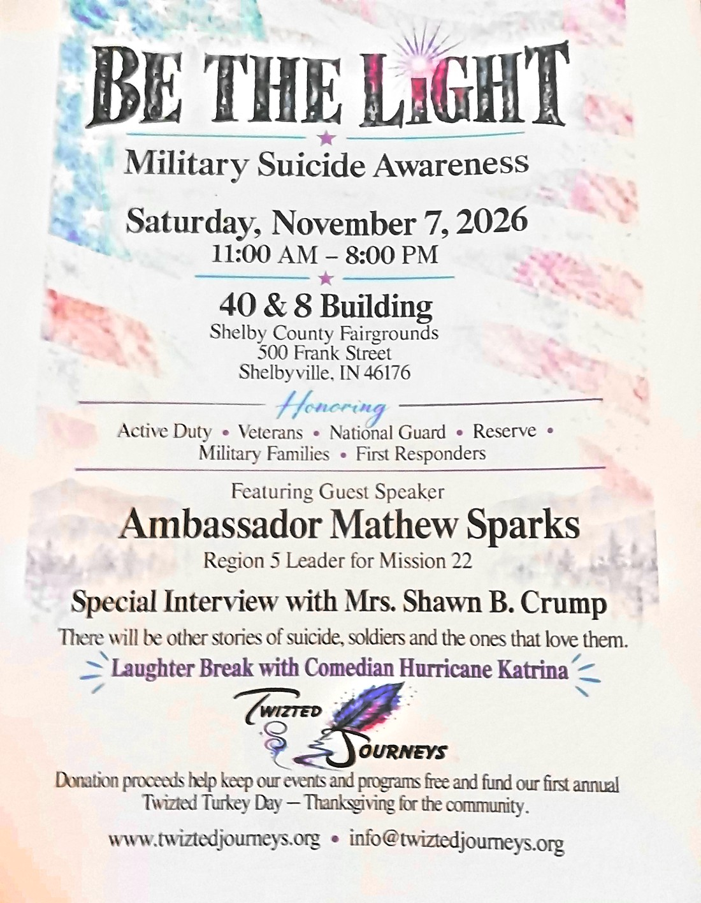

Saturday, November 7, 2026 · Shelbyville, Indiana
Be the Light
Military Suicide Awareness — a day honoring active duty, veterans, National Guard, Reserve, military families and first responders.

Military Suicide Awareness
Saturday, November 7, 2026
Join Twizted Journeys for a day of remembrance, stories and connection for the people who serve and the ones who love them.
Honoring
- Active Duty
- Veterans
- National Guard
- Reserve
- Military Families
- First Responders
- When Saturday, November 7, 2026 · 11:00 AM – 8:00 PM
- Where 40 & 8 Building, Shelby County Fairgrounds, 500 Frank Street, Shelbyville, IN 46176
- Guest Speaker Ambassador Mathew Sparks, Region 5 Leader for Mission 22
- Special Interview Mrs. Shawn B. Crump. There will be other stories of suicide, soldiers and the ones that love them.
- Laughter Break Comedian Hurricane Katrina
- Your Donation Donation proceeds help keep our events and programs free and fund our first annual Twizted Turkey Day — Thanksgiving for the community.